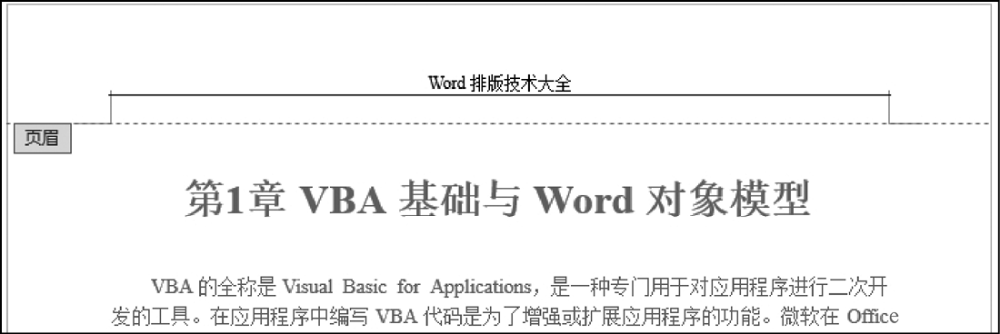
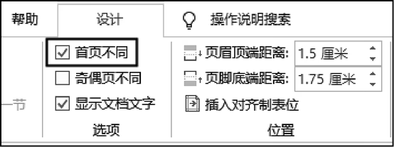
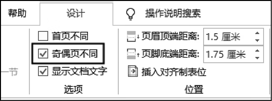

首页 > 编程笔记
Word设置页眉和页脚（多种方式）
页眉和页脚是 Word 页面中的重要区域，可以用于放置一些与文档相关的信息，例如文档名称、章节标题、页码等。
本文将介绍适用于不同需求的页眉和页脚的设置方法。
进入页眉和页脚编辑状态，然后添加内容，最后退出页眉和页脚编辑状态。
1) 双击页面中的页眉或页脚区域，即可进入页眉和页脚编辑状态。
此时版心中的内容将显示为浅灰色，页眉和页脚中的内容则显示为黑色。退出页眉和页脚编辑状态后，版心中的内容会显示为黑色，页眉和页脚中的内容则显示为浅灰色。通过内容颜色的深浅可以识别当前所处的编辑状态。
2) 与在版心中添加内容的方法类似，可以在页眉和页脚中添加各种类型的内容，包括文字、表格、图片、图表、形状、文本框、艺术字等。
进入页眉和页脚编辑状态后，将自动激活功能区中的【页眉和页脚工具|页眉和页脚】选项卡，该选项卡中包含与页眉和页脚相关的命令和选项。图1所示为在页眉中输入了文档的名称。
3) 编辑完成以后，按 Esc 键可退出页眉和页脚编辑状态。
最后，在每一页的页眉和页脚中添加所需的内容。
本文将介绍适用于不同需求的页眉和页脚的设置方法。
1. 在页眉和页脚中输入固定不变的内容
前面介绍 Word 插入页码的操作时，实际上已经在使用页眉和页脚操作了。无论在页眉和页脚中添加什么内容，都遵循以下3个步骤。进入页眉和页脚编辑状态，然后添加内容，最后退出页眉和页脚编辑状态。
1) 双击页面中的页眉或页脚区域，即可进入页眉和页脚编辑状态。
此时版心中的内容将显示为浅灰色，页眉和页脚中的内容则显示为黑色。退出页眉和页脚编辑状态后，版心中的内容会显示为黑色，页眉和页脚中的内容则显示为浅灰色。通过内容颜色的深浅可以识别当前所处的编辑状态。
2) 与在版心中添加内容的方法类似，可以在页眉和页脚中添加各种类型的内容，包括文字、表格、图片、图表、形状、文本框、艺术字等。
进入页眉和页脚编辑状态后，将自动激活功能区中的【页眉和页脚工具|页眉和页脚】选项卡，该选项卡中包含与页眉和页脚相关的命令和选项。图1所示为在页眉中输入了文档的名称。

图1：在页眉中输入所需的内容
图1：在页眉中输入所需的内容
3) 编辑完成以后，按 Esc 键可退出页眉和页脚编辑状态。
注意事项
如果在页眉或页脚中插入了尺寸较大的内容，例如图片或形状，页眉或页脚区域会自动增大，以便可以完全容纳其中的内容。2. 使首页的页眉和页脚与其他页不同
如果需要使文档第一页的页眉或页脚与其他页不同，则可以双击页眉或页脚区域，进入页眉和页脚编辑状态，然后在功能区的【页眉和页脚工具|页眉和页脚】选项卡中选中【首页不同】复选框，如图2所示。

图2：选中【首页不同】复选框
图2：选中【首页不同】复选框
3. 使奇数页和偶数页拥有不同的页眉和页脚
如果需要使文档中的奇数页和偶数页拥有不同的页眉和页脚，则可以进入页眉和页脚编辑状态，然后在功能区的【页眉和页脚工具|页眉和页脚】选项卡中选中【奇偶页不同】复选框，如图3所示。

图3：选中【奇偶页不同】复选框
图3：选中【奇偶页不同】复选框
注意事项
如果在执行上述操作之前已经在页眉和页脚中输入了内容，在选中【奇偶页不同】复选框之后，则只保留所有奇数页的页眉和页脚中的内容，并自动删除所有偶数页的页眉和页脚中的内容。4. 从指定的页面开始显示页眉和页脚
如果需要从指定的页面开始显示页眉和页脚，插入分节符并断开两节之间的关联即可。操作方法与《Word设置页码》一文中介绍的从指定的页面开始显示页码类似，唯一区别在于：- 那篇文章介绍的是在页眉或页脚中插入页码；
- 而本篇文章是在页眉或页脚中插入包含页码在内的任何内容。
5. 使每一页的页眉和页脚都不相同
如果需要使每一页的页眉和页脚中的内容都不相同，则可以在每一页插入一个“连续”类型的分节符，然后进入页眉和页脚编辑状态，在功能区的【页眉和页脚工具|设计】选项卡中单击【链接到前一条页眉】按钮，使该按钮弹起，断开页与页之间的页眉和页脚的关联。最后，在每一页的页眉和页脚中添加所需的内容。
关注公众号「站长严长生」，在手机上阅读所有教程，随时随地都能学习。内含一款搜索神器，免费下载全网书籍和视频。

微信扫码关注公众号